01 — The Beginning
Where it all started.
I learned the fundamentals of visual design, typography, and composition, and developed a love for making things look and feel good.
Private
Project 01
Designing Credit, Chequing, and Savings to work as one family.
Overview
As Neo Financial continued to grow, its account experiences needed a refresh.
Project Details
Context
Neo's banking products were growing, but the account experiences hadn't quite kept up. I led a redesign of chequing, credit, and high-interest savings, building on our existing GIC experience to create a more intuitive and consistent foundation.
Customer support calls and in-app feedback were pointing to recurring frustrations with Neo's account experiences.
COMPETITIVE ANALYSIS
Before jumping into solutions, I spent time studying how other financial apps approached account navigation. I looked at Wealthsimple, Revolut, traditional banks, and other fintechs to understand the patterns behind their experiences.
The goal wasn't to copy them, but to learn what worked and adapt those ideas to Neo.
COMPETITIVE ANALYSIS
INFORMATION ARCHITECTURE
Instead of redesigning each account independently, I started exploring a shared structure built around the information and actions customers needed most.
The structure needed to feel familiar across products, while remaining flexible enough for their individual needs.
DESIGN EXPLORATION
With the structure taking shape, I explored different layouts, navigation patterns, and ways to make important account information easier to understand.
Some of the key explorations included making cards more visible, introducing quick actions, and using visual indicators to communicate account status at a glance.
THE REDESIGN
The redesigned experience brought important actions and information forward, removed unnecessary navigation complexity, and introduced a refreshed visual direction.
It wasn't just about making the accounts look better. It was about helping people understand and manage their money more easily.
SCALABILITY
The same architecture could accommodate different financial products without forcing them into identical experiences.
Credit prioritized payments and available credit, savings emphasized goals and interest, and GICs surfaced information like rates and maturity.
We also explored how future features, including joint accounts, could fit into this structure.
OUTCOME & REFLECTION
This project reinforced something I strongly believe: a good information architecture can simplify today's experience while helping prepare a product for what's next.
It also reminded me that usability and visual craft don't have to compete. The best experiences bring both together.
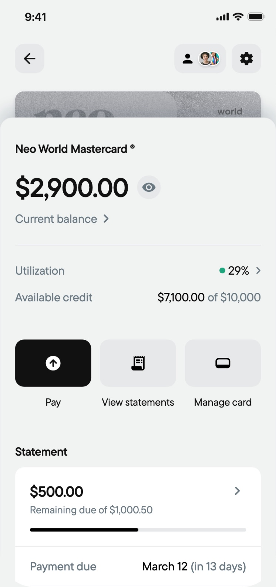
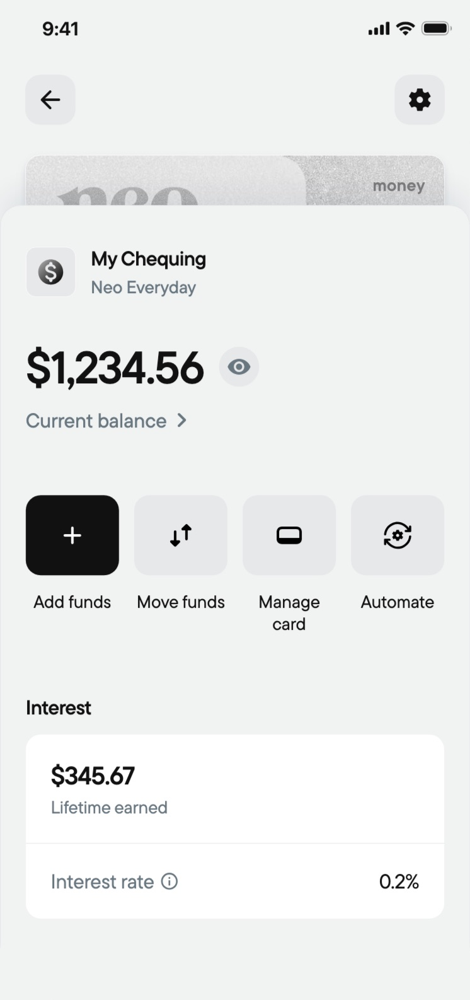
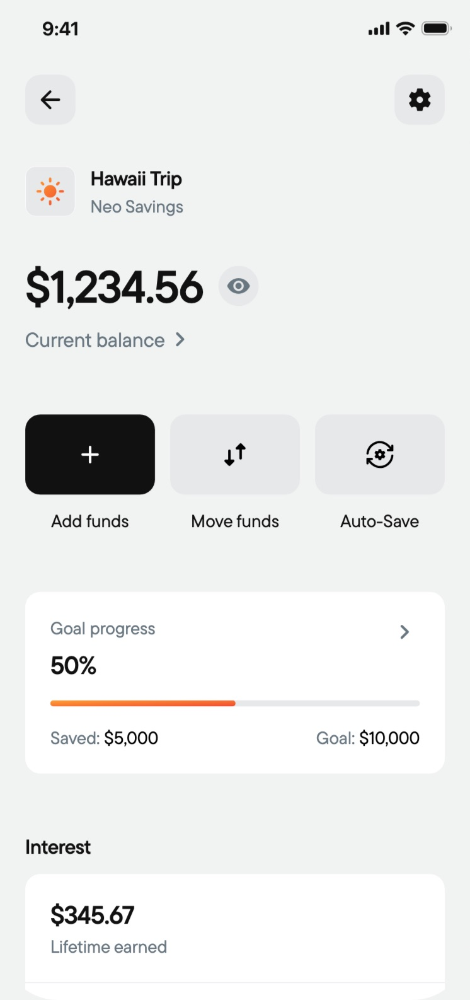
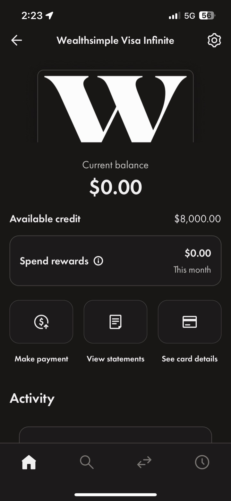
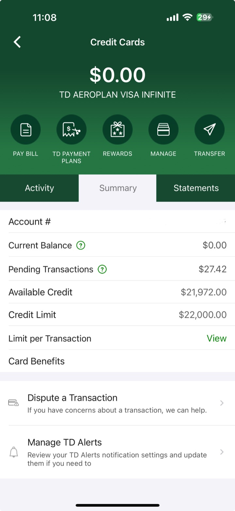
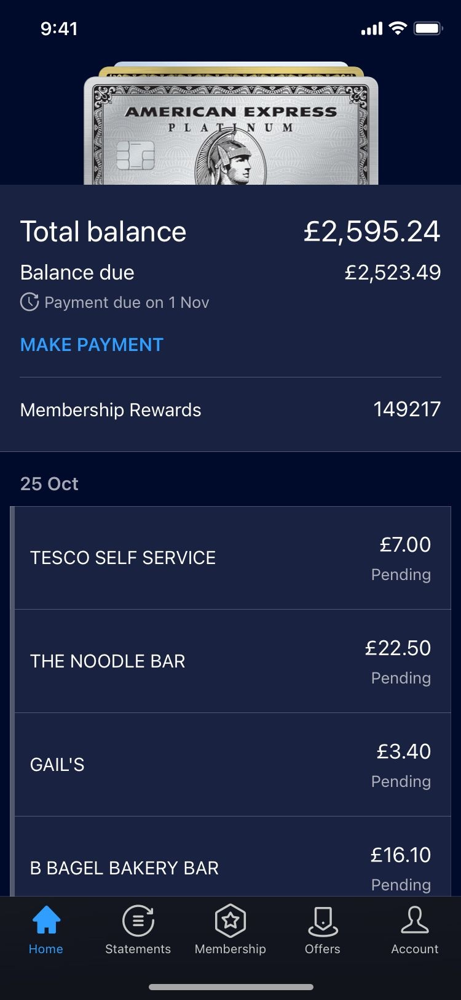
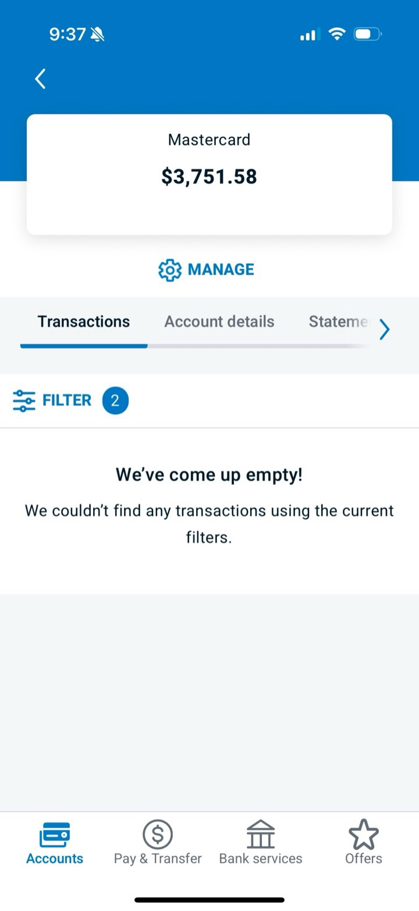
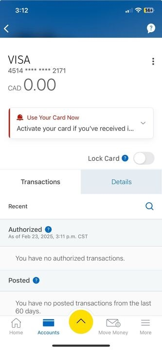
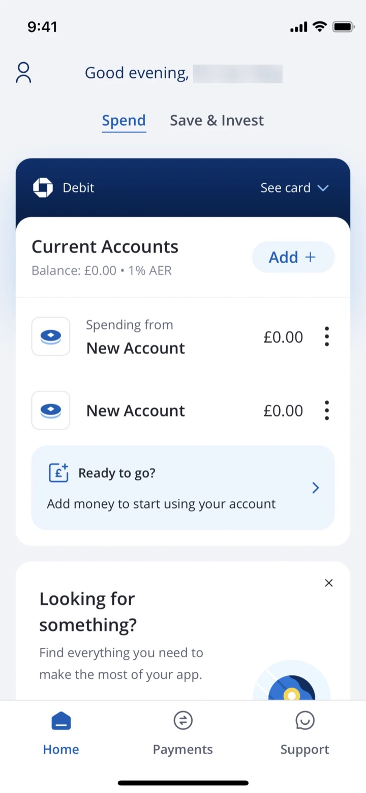
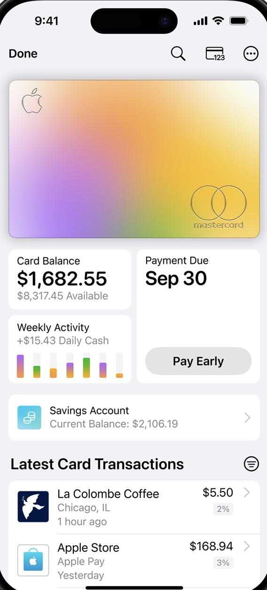
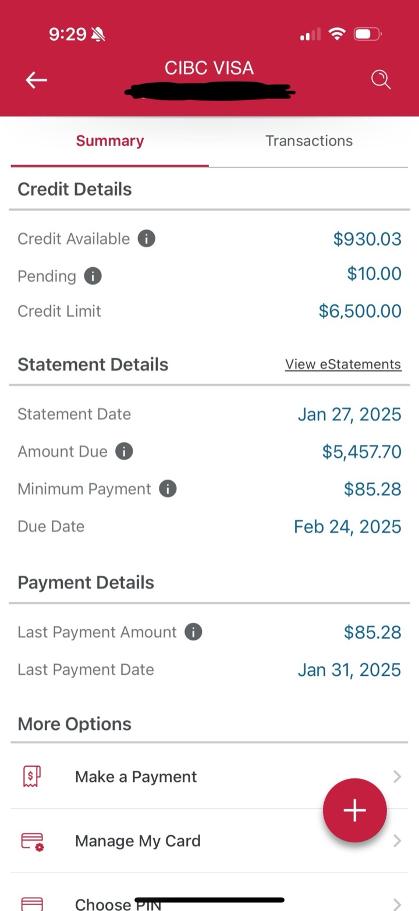
Tabular navigation is common within the Big 6, but notice their position at the top of the page.